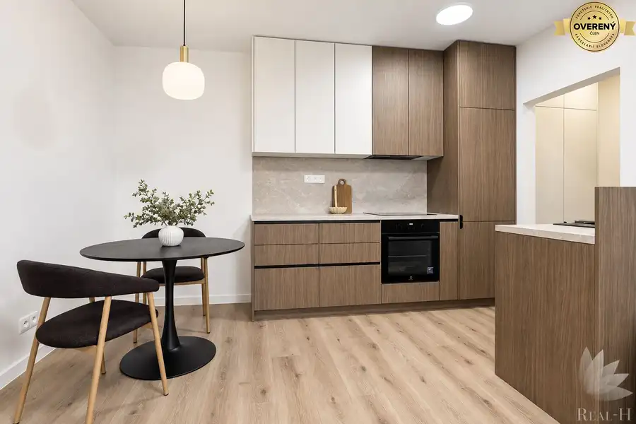
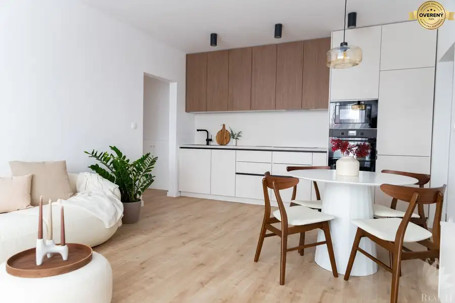

Snívate o bývaní v TOP lokalite?
Ružinov, Bratislava
- Dispozícia2-izbový
- Plocha53.45 m²
- Poschodie4. z 7
- Stavpo rekonštrukcii
- Vlastníctvoosobné
O nehnuteľnosti
Ak snívate o bývaní v srdci
Ružinova
, predstavujeme Vám jedinečnú príležitosť kúpy moderného 2 izbového bytu, kompletne zrekonštruovaný s krásnym výhľadom.
Nádherný výhľad z balkóna a loggie. Skvelá dispozícia a lokalita, Vám zaručia tiché a pokojné bývanie. Milovníci prírody si prídu na svoje . Obľúbená mestská časť
BA II Ružinov
, Vám poskytne všetko pre komfortné bývanie blízko centra mesta, no zároveň aj v blízkosti prírody.
BYT:
Realitná kancelária Real -H, s.r.o., Vám predstavuje predaj bytu Exnárova ulica – Bratislava II Ružinov
Priestranný
2-izbový byt
s rozlohou: 57,79 m2
(byt 53,45 m2 + s pivnicou 2,60 m2 ) + loggia 2,99 m2 + balkón 1,35 m2
Nachádza sa na 4. poschodí z 7 poschodí, 1 x výťah ( nový , väčší osobný )
orientácia: celý byt je orientovaný na VÝCHOD
DISPOZÍCIA BYTU:
* vstupná predsieň so skriňou, zrkadlom a vešiakovými lamelami
* samostatné WC
* kúpeľňa s vaňou , umývadlom na modernej skrinke, LED zrkadlo
* priestranná obývacia izba so skrinkou na TV a so vstupom do kuchyne a do spálne
* kuchyňa s modernou dizajnovou kuchynskou linkou so všetkými zabudovanými spotrebičmi
(chladnička s mrazničkou, umývačka riadu, elektrická rúra, indukčná varná doska, digestor), LED podsvietenie pracovnej plochy, samostatná potravinová skrinka s priestorom na kávovar a malé kuchynské spotrebiče, kuchyňa má vstup na balkón
* spálňa s veľkou šatníkovou skriňou, vstup na loggiu
Veľkou výhodou je loggia zo spálne, balkón z kuchyne a pivnica v suteréne domu.
VYBAVENIE A ZARIADENIE BYTU:
Byt bol kompletne rekonštruovaný 2025
* plastové okná so žalúziami ,
* nová elektroinštalácia s revíznou správou
* nová vodoinštalácia v kúpeľni a v kuchyni, nové radiátory
* nové bezpečnostné a interiérové dvere
* nová sanita v kúpeľni a vo WC+ nové obklady a dlažby
* nové laminátové podlahy v celom byte
* sadrokartónové podhľady v predsieni, v kúpeľni a vo WC
* v celom byte sú dizajnové LED svietidlá
* byt je zariadený moderným nábytkom vyrobeným na mieru
* predpríprava na klimatizáciu
* okamžite voľný
PARKOVANIE:
* priamo pri bytovom dome
BYTOVÝ DOM:
* kompletne zateplený
* nová fasáda
* nový vstup do domu, otváranie čipom
* rekonštruované spoločné priestory, nový výťah
* nová vstupná brána
* nové stúpačky v dome
OKOLIE:
* najvyhľadávanejšia mestská lokalita – pokojná časť Ružinova blízko centra starého mesta
* dostupnosť do centra mesta, na obchvat, hlavné cesty, neďaleko domu sa nachádza zastávka električky a autobusu
* v dostupnosti od domu je LIDL, BILLA, KRAJ, služby, obchody, kaviarne, gastro prevádzky, banky, bankomaty
* výborná občianska vybavenosť – kvalitné školy, škôlky, športoviská
* v blízkosti bytového domu vyhľadávané oddychové zóny a parky s množstvom trávnatých plôch vhodných na relax, jazerá ŠTRKOVEC, ROHLÍK
* v dostupnej vzdialenosti je nákupné centrum RETRO, AVION taktiež nemocnica , poliklinika
Bytový dom sa nachádza v najobľúbenejšej mestskej časti Ružinov, vyhľadávanú pre svoju výhodnú polohu, množstvo zelene, trávnatých plôch a výbornú občiansku vybavenosť.. Okolie ponúka kvalitné zázemie pre pokojné a komfortné bývanie.
PREVÁDZKOVÉ NÁKLADY:
165,-EUR / mesiac (1 osoba)
CENA:
0,-EUR + 2 % provízia pre RK , s možnosťou financovania aj hypotekárnym úverom , s ktorým Vám radi pomôžu naši hypotekárni poradcovia bezplatne.
Provízia zahŕňa kvalitné realitné a právne služby spojené s prevodom nehnuteľnosti:
– vypracovanie kompletnej zmluvnej dokumentácie (zmluva o budúcej zmluve, rezervačná zmluva, zmluva o prevode vlastníctva bytu, návrh na vklad vlastníckych práv, prípadné dodatky, protokol o prevzatí a odovzdaní nehnuteľnosti…)
– notárske poplatky spojené s overovaním podpisov predávajúceho na zmluve o prevode vlastníctva bytu
– správny poplatok (kolok v hodnote 66,-EUR) spojený s návrhom na vklad vlastníckych práv
– zabezpečenie promptného ohodnotenia nehnuteľnosti prostredníctvom znalca, ktorý je akceptovaný všetkými bankami
/2-IZBOVÝ BYT / ZARIADENÝ / LOGGIA / BALKÓN / BRATISLAVA II RUŽINOV / EXNÁROVA ULICA /
Kontakt: Real-H,s.r.o
Office: Hraničná 20B, 821 05 Bratislava
Ing. Rebeca Bačiková
Email:
www.realh.sk
Parametre
| Celková rozloha | 57.79 m² |
|---|---|
| Úžitková plocha | 53.45 m² |
| Poschodie | 4/vyššie poschodie |
| Počet poschodí | 7 |
| Počet izieb | 2 |
| Vlastníctvo | osobné |
| Stav | po rekonštrukcii |
| Odvoz odpadu | áno - separovaný |
| Plyn | nie |
| Internet | optika |
| Kúpeľňa | vaňa |
| Vykurovanie | spoločné |
| Balkón | áno - 1 |
| Lódžia | áno - 1 |
| Terasa | nie |
| Pivnica | áno |
| Garáž | nie |
| Výťah | áno |
| Parkovanie | verejné |
| Postavené z | panel |
| Zariadenie | zariadený |
| Zateplený objekt | áno |
| Káblová televízia | áno |
| Energetický certifikát | áno |
| Predzáhradka | nie |
| Bezbariérový prístup | áno |
| Okná | plastové |
| Orientácia | východná |
| Dátum zverejnenia | 17. 9. 2025 |
Kde to je
Mohlo by Vás zaujímať

BytNové10 198 000 €Na predaj kompletne zrekonštruovaný 1,5 – izbový byt vo Vrakuni Vrakuňa, Bratislava 2-izbový39.01 m²2. podlažie Real -H, s.r.o. ponúka na predaj kompletne prerobený 1,5 izbový byt s priestrannou loggiou. Byt je kompletne a vkusne zariadený moderným dizajnovým…
BytPredané10 PredanéPriestranný 2,5-izbový byt v srdci Ružinova Ružinov, Bratislava 3-izbový52.83 m²5. podlažie Hľadáte bývanie, kde máte všetko na dosah a zároveň si užijete pokoj a zeleň? Tento štýlový 2,5-izbový byt na Medzilaboreckej ulici v obľúbenom…